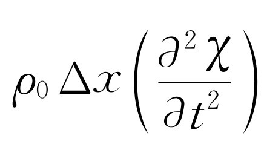

第47章 声、波动方程
§47-1 波
本章我们将讨论波动 现象。这种现象出现在整个物理学的许多领域中，所以我们应当把注意力放在它上面，不仅是因为这里所考察的特殊例子——声，而且也因为有关的概念在物理学的所有分支中有着相当广泛的应用。
我们在研究谐振子时已经指出过，振动系统的例子不仅在力学中存在，而且在电学中也同样存在。波动与振动系统有关，但波动不仅仅表现为在一处的随时间的振动，并且还在空间中传播。
实际上我们已经研究过波动。在研究光学，讨论光的波动性质时，我们曾特别研究若干位于不同地方以同一频率振动的波源发出的几列波在空间的干涉现象。而在光波即电磁波以及其他任何形式的波动中所出现的两个重要现象，我们还不曾讨论。其中一个现象就是，波在时间 上而不是在空间上的干涉 现象。如果两个声源的频率稍有差别，在我们同时收听这两个声音时，有时声波波峰一起来，有时则是波峰和波谷一起来（见图47-1）。这样所产生的声音的起伏就形成拍现象，或者说时间上的干涉。第二个重要现象涉及到波型，当波动约束在一定体积中，在界面之间来回反射时，就形成了这种现象。
当然，在研究电磁波时，本来可以对这些效应加以讨论。我们之所以没有这样做，是因为只使用一种例子也许会使我们不能体会到实际上已同时学习了许多不同的课题。为了强调波动概念的普适性超出了电动力学范围，我们这里考虑一种不同的例子，特别是声波的情况。
我们在海岸边缘见到过由长长的大浪形成的水波翻腾的情况，也见过由表面张力的涟漪形成的小水波。这又是一些波动的例子。再举另外一种例子，在固体中有两类弹性波：一类是压缩波（或纵波），固体中的粒子沿着波传播的方向来回振动（气体中的声波就属于这一类）；另一类是横波，固体中的粒子在垂直于波传播的方向上振动。地震波包括了这两类弹性波，它们是由某处地壳的运动而造成的。
在现代物理学中还可找到另一类波的例子。这类波给出了在确定地方发现粒子的概率振幅，即我们已经讨论过的“物质波”。它们的频率正比于能量，波数则正比于动量。这就是量子力学中的波。
在本章中我们将只考虑波速与波长无关的波动。例如，光在真空中的传播情况就是如此。对无线电波、蓝光、绿光或任何其他波长的光来说，光速都相同。由于这种性质，当初开始描写波现象时，我们并没有指出波在传播这一点。我们只是说，如果有一个电荷在某处运动，那么离开它x 处的电场正比于在较早时刻（t -x /c ）的加速度，而不是在t 时刻的加速度。所以，如果我们画出某个瞬间空间中的电场，如图47-2所示，那么经过时间t 后的电场将移动距离ct ，如图中所示。在这里所取的一维例子中，从数学上我们可以说，对这个一维的例子，电场是（x -ct ）的函数。我们看到，当t =0时，它是x 的某个函数。如果我们考虑较后一个时刻，只需适当增加x 值就可以得到同样的电场值。举例说，如果在t =0时，电场极大值出现在x =3处，那么，为了找到在时刻t 电场极大值的新位置，就得有
x -ct =3 或 x =3+ct .
我们看到，这样的函数表示了波的传播。
所以，f （x -ct ）这种函数就表示了波。我们可以这样简单地总结波的描述
f （x -ct ）=f ［x +Δx -c （t +Δt ）］，
这里Δx =c Δt 。当然，还有另一种可能，即波源不是像图47-2中所示的那样在左边，而是在右边，结果波往负x 方向传播。这时就要用g （x +ct ）来描写波。
此外，还存在这样一种可能性，空间同时存在着比方说一列以上的波，那么总电场就是两个独立传播的电场的和。电场的这种性质可以叙述为，假定f 1 （x -ct ）是一列波，f 2 （x -ct ）是另一列波，那么它们的和也是波。这就叫做叠加原理。叠加原理对于声波来说同样有效。
我们都熟悉这样一个事实：声音产生以后，我们所听到的声音的顺序与产生时的顺序完全相同。假定高频的声音传播得比低频的快，那么短促尖锐的噪声将发生在乐声之后。类似地，如果红光跑得比蓝光快，那么当白光闪一下后，人们就会先看到红色，接着是白色，最后是蓝色。我们所知道的事实表明，情况并非如此。声与光在空气中的传播速率都非常接近于跟频率无关。跟频率有关的波传播的例子将在第48章中讨论。
对于光（电磁波）的情况，我们提供了一条规则来确定因电荷的加速而在某点所产生的电场。人们现在可能也期望有这么一条规则，由此能借助声源本身的运动并考虑到声传播时间引起的推迟，确定声源外一给定距离上空气的某个物理量如压强的数值。对于光来说，这种做法是行得通的，因为我们所要知道的一切就是一处的电荷对在另一处的另一个电荷施加作用力。从一处到另一处的传播细节并不是绝对重要的。然而，在声的情况下，我们知道它通过声源与收听者之间的空气而传播。因此，无疑人们会提出一个很自然的问题：在任何给定时刻，空气的压强有多大。另外，我们还想确切地知道空气怎样运动。在电学情况下，我们可以接受一条规则，因为我们可以说自己还不知道电学定律，但对于声来说，我们就不能讲同样的话了。因为整个过程应当作为力学定律的结果而得到理解，所以我们当然不会满足于仅仅陈述声压如何通过空气而传播的规则。简言之，声学是力学的一门分支，所以它要用牛顿定律来解释。声波由一处往另一处的传播，只是力学定律及传播声的那种物质的性质（如果在气体中传播，就指气体的性质，如果在液体或固体中传播，就指这些介质的性质）的推论。以后我们将用类似的方法从电动力学定律导出光的性质和光波的传播。
§47-2 声的传播
我们准备从牛顿定律导出声波在声源与接收者之间 传播的特性，而对声源与接收者之间的相互作用将不予考虑。通常我们强调的是推导的结论而不是某一特殊推导过程本身。在本章中我们将采取相反的观点。在某种意义上，这里的要点就在于推导本身。在我们知道了旧现象的规律之后，能借助于已知现象来解释新现象这件事或许是数学物理学的最伟大艺术。数学物理学家要解决两个问题：一个是给定了方程之后求出解答，另一个是找出描写新现象的物理方程。这里的推导是属于后一种情形的一个例子。
我们在这里将取一个最简单的例子——声波的一维传播。要进行这样的推导，首先必须对所发生的事情有一定的了解。这里所包含的基本事实就是，如果一个物体在空气中的某个地方运动着，我们就观察到有一种扰动在空气中传开。这是怎样的一种扰动？我们可以认为物体的运动产生了压强上的变化。当然，如果物体的运动相当缓慢，空气便只是绕着它流过去。但我们要讨论的是快速的运动，因此空气没有足够的时间作这样的流动。于是，随着物体的运动空气被压缩，引起压强上的变化，这种变化推动了周围的气体，接着这部分气体又被压缩，这又引起额外的压强，这样波就传播开了。
现在我们要把这个过程写成公式。首先必须决定所需要的变量。在这个特定问题中，我们要知道空气移动了多远，所以在声波中空气的位移 肯定是一个有关的变量。此外，我们还要描述，在空气移动时它的密度 怎样变化。空气压强 也会发生改变，所以这又是一个值得注意的变量。当然，空气还有速度 ，因而我们必须描写空气粒子的速度。这些粒子还有加速度 ——但是，当我们列举了这么多变量之后，立即会认识到，如果知道了空气位移 怎样随时间而变化，那么速度和加速度也就知道了。
我们已经说过，要考虑的是一维波动。如果离开波源足够远，以致所谓的波前 非常接近于平面，那么就可以这样处理。取一个复杂性最小的例子会使论证比较简单一些。因此，我们可以说：位移χ 只取决于x 和t ，而与y 和z 无关。所以我们用χ （x ，t ）来描写空气的位移。
这个描述完全吗？看来远远谈不上完全。因为我们一点也不知道空气分子运动的详情。它们往四面八方运动，这种情况肯定不能用函数χ （x ，t ）来描写。从分子动理论的观点来看，假定在一个地方分子密度较高，而在邻近的地方分子密度较低，那么分子就会从密度较高的区域跑向密度较低的区域，使得差异抵消。显然，这样一来就不会产生振动，于是也就没有声音。为了得到声波，必须出现下述情况：当分子由密度较高及压强较大的区域冲出去时，它们将把动量传递给邻近的密度较低区域中的分子。为了使声波得以产生，密度与压强上有变化的区域必须远远大于分子在与其他分子进行碰撞前所走过的距离。这段距离即平均自由程，而压强的波峰与波谷之间的距离必须远远超过它，不然分子就会自由地从波峰跑向波谷，一下子把波抹平。
十分清楚，我们是在远大于平均自由程的尺度上来描写气体行为的，所以不用个别分子的运动来描写气体的性质。例如，所谓位移就是指一小块气体的质心的位移，而压强或密度则是这一小块区域中的压强或密度。我们称压强为P ，密度为ρ ，它们都是x 和t 的函数。我们必须记住这种描写只是近似的，只有当气体的有关性质随距离的变化不太快时才成立。
§47-3 波动方程
声波现象的物理内容包括了三个特征：
Ⅰ．气体的移动使密度发生变化。
Ⅱ．密度上的变化对应着压强上的变化。
Ⅲ．压强的不相等导致气体的运动。
我们首先考虑Ⅱ。对于气体、液体或固体，压强是密度的某个函数。在声波抵达之前，我们有一个平衡状态，它的压强为P 0 ，对应的密度是ρ 0 。介质中的压强P 与密度ρ 由某种函数关系P =f （ρ ）联系起来，特别是平衡状态时的压强P 0 由P 0 =f （ρ 0 ）给定。声波中的压强相对于平衡值的变化是极其微小的。量度压强的一个方便单位是巴（bar） ：1bar=105 N·m-2 。1atm非常接近于1bar，即1atm=1.0133bar。在声学中我们采用声强的对数标度，因为耳朵的灵敏度近似地按对数变化。这个标度是分贝（dB）标度，对于振幅为P的压强，其声压级I 用下式来定义
 （47.1）
（47.1）
这里参考压强P 参 =2×10-10 bar [1] 。如压强振幅为P =103 P 参 =2×10-7 bar，与之对应的就是60d B的中等强度的声音。我们看到，在声波中压强的变化与平衡压强或平均压强一个大气压相比极其微小，位移和密度的变化相应地也极其微小。在爆炸时，变化就不是这么小了；所产生的额外压强可能超过1个大气压。这么大的压强变化将导致新的效应，我们在以后再来讨论。对声音来说，通常我们不考虑超过100d B的声强级，120d B的声强级已使耳朵有痛觉。因此，对声波来说，如果写下
P =P 0 +P e ，ρ =ρ 0 +ρ e ，（47.2）
那么与P 0 相比压强变化值P e 总是很小，而与密度ρ 0 相比密度变化值ρ e 也总是很小。于是
P 0 +P e =f （ρ 0 +ρ e ）=f （ρ 0 ）+ρ e f′ （ρ 0 ）.（47.3）
这里P 0 =f （ρ 0 ），而f′ （ρ 0 ）是当ρ =ρ 0 时得出的f （ρ ）的微商值。只是由于ρ e 很小，我们才可以取第二步等式。这样我们就发现额外压强P e 正比于额外密度ρ e ，如果称比例系数为κ ，则
所以，对于Ⅱ来说我们要得到的就是这个非常简单的关系式。
现在来考虑Ⅰ。我们假设没有被声波扰动的那部分空气的位置是x ，而在时刻t 由声波引起的位移是χ （x ，t ），因此新的位置是x +χ （x ，t ），如图47-3所示。我们还假设邻近的未受扰动的一部分空气的位置是x +Δx ，而其新的位置是x +Δx +χ （x +Δx ，t ）。现在可以用下述方法来求出密度的变化。因为只限于平面波，所以我们可取垂直于x 方向的单位面积，x 方向就是声波传播的方向。于是由单位面积和Δx 所围成的那部分空气的质量就是ρ 0 Δx ，这里ρ 0 是未受扰动的或平衡状态下的空气密度。这些空气在声波驱动下移到x +χ （x ，t ）与x +Δx +χ （x +Δx ，t ）之间，这样，这个区间内的气体质量应与未扰动前处在Δx 区间内的气体质量相同。如果以ρ 表示新的密度，就有
ρ 0 Δx =ρ ［x +Δx +χ （x +Δx ，t ）-x -χ （x ，t ）］.（47.5）
因为Δx 很小，我们可以写出
这个微商是偏微商，因为χ 与时间t 及x 都有关系。我们的方程于是就变为
或
由于在声波中所有的变化都很小，因此ρ e 很小，χ 很小， 也很小。所以在我们刚找到的关系式
中，与 相比我们可以略去 。这样我们就得到Ⅰ所要求的关系式
这个方程从物理上是可以预料的；如果位移随着x 而改变，那么就会有密度上的变化。式中的符号也是正确的：如果位移χ 随着x 而增加，那么空气就扩展开来，密度就一定会下降。
现在我们需要第三个方程，那就是由压强改变所产生的运动方程。如果我们知道力与压强之间的关系，就可以得出运动方程。现在我们取一薄层空气，它的厚度为Δx ，侧面积为与x 相垂直的单位面积，则此薄层气体的质量是ρ 0 Δx ，其加速度为 ，于是质量与加速度的乘积就是 （当Δx 很小时，不管加速度∂ 2 χ /∂ t 2 是指薄块边上的值还是指某个中间位置的值都没有关系）。假如现在我们求得在垂直于x 的单位面积上给予这层空气的作用力，那么它就等于ρ 0 Δx （∂ 2 χ /∂ t 2 ）。在x 处沿+x 方向，单位面积所受的力是P （x ，t ），在（x +Δx ）处沿-x 方向，单位面积所受的力是P （x +Δx ，t ）（图47-4），由于Δx 甚小，并且P 中的变化部分只有额外压强P e ，结果我们得到
最后，对于Ⅲ，我们有
这样就有足够的方程将各件事情联系起来，并将变量减少到一个，比如说χ 。利用（Ⅱ）式能从（Ⅲ）式中消去P e ，于是有
再利用（Ⅰ）式就可消去ρ e 。这样我们发现ρ 0 也被消去，余下的就是
我们令 ，因此可写出
这就是描写物质中声波行为的波动方程。
§47-4 波动方程的解
现在我们可以来看看这个方程是否确实描写了物质中声波的基本性质。我们希望由此推出声脉冲或扰动将以恒定速率运动，并且希望证实两个不同的脉冲可以相互穿过——叠加原理。我们还想证实声波可以往右或往左传播。所有这些性质都应当包括在这一个方程之中。
我们已经说过，任何以恒定速度v 运动的平面波的扰动都具有形式f （x -vt ）。现在必须来看一下χ （x ，t ）=f （x -vt ）是否为波动方程的一个解。在计算∂ χ /∂ x 后，就得到∂ χ /∂ x =f′ （x -vt ），再进行一次微商，则得到
这同一函数对t 的微商是-v 乘以函数的微商，即 ，而二阶时间微商是
很明显，倘使波速v 等于c s ，f （x -vt ）就满足波动方程。因此，根据力学定律 我们发现任何声扰动以速度c s 传播。此外，我们还发现
这样我们就把波速与介质的性质联系起来了 。
假如考虑一列沿相反方向传播的波，那么χ （x ，t ）=g （x +vt ），不难看出这样一种扰动也满足波动方程。这列波跟从左向右行进的波的唯一差别就是v 前的符号，但是，无论函数中的变量是x -vt 还是x +vt ，都不影响∂ 2 χ /∂ t 2 的符号，因为它包含的只是v 2 项。由此可见我们具有以速度c s 往左或往右传播的波的解答。
叠加性是非常有趣的问题。假定我们已经找到波动方程的一个解，比方说χ 1 ，这意味着χ 1 对x 的二阶微商等于 乘以χ 1 对t 的二阶微商。现在如果有任意另一个解χ 2 亦具有同样的性质。假定把这两个解叠加起来，就有
χ （x ，t ）=χ 1 （x ，t ）+χ 2 （x ，t ），（47.17）
我们要证实χ （x ，t ）也是波，即χ 也满足波动方程。这个结果很容易证明，因为我们有
以及
所以就有 。这样我们就证实了叠加原理。叠加原理的证明正是建立在波动方程对χ 是线性 的这个事实上的。
现在我们可以预期，沿x 方向传播而其电场在y 方向上的偏振平面光波将满足波动方程
这里c 是光速。这个波动方程是麦克斯韦方程的结论之一。电动力学的定律将导致光的波动方程，正像力学定律导致声的波动方程一样。
§47-5 声速
上面对声波的波动方程的推导使我们得到了一个公式 ，它把波速与正常大气压下压强对密度的变化率联系在一起
在计算这个变化率时，必须知道温度如何变化。在声波中，我们预期压缩区域的温度会升高，而稀薄区域的温度会降低。牛顿第一个计算了压强对密度的变化率，他假设温度保持不变。他论证热量十分迅速地由一个区域传导到另一个区域，以致温度不可能升高或降低。在这种论证下得到了声波的等温速率，但这是错误的。正确的推导是后来由拉普拉斯作出的。他提出了相反的概念——在声波中压强与温度进行着绝热变化。只要波长远大于平均自由程，热量从压缩区域往稀薄区域的流动是可以忽略的。在这种条件下，声波中的少量热流并不影响速度，虽然它吸收了一点声能。我们可以正确地预计到这种吸收将随着波长趋近于平均自由程而增加，但这种波长大约比可闻声波波长的百万分之一还要小。
声波中压强随密度的实际变化是一种没有热流的变化。这相当于绝热变化。对这种情况，PV γ =常数，这里V 是体积。由于密度反比于V ，P 与ρ 之间的绝热关系是
P =常数ρ γ .（47.22）
由此可得dP /dρ =γP /ρ 。于是对于声速就有关系式
我们也可写为 ，再利用等式PV =NkT ，而且由于ρV 是气体质量，它也可表示为Nm 或 μ ，这里m 是一个分子的质量， μ 是分子量，由此可得
从此式显然可知声速只与气体温度有关，而与压强或密度无关。我们还注意到
 （47.25）
（47.25）
这里〈v 2 〉是分子的方均速率。因此 ，或
这个式子表明声速的大小大致等于 乘以分子的某种平均速率v 平均 （方均速率的平方根）。换句话说，声速与分子速率具有同样的数量级，实际上多少小于分子平均速率。
当然，我们可以预料到会有这样的结果，因为扰动像压强的变化一样，归根结蒂是由于分子运动而传播的。然而，这种论证并不能告诉我们精确的传播速率；因为既可以说声波主要是由最快的分子传播的，也可以说主要是由最慢的分子传播的。一种合乎情理的并令人满意的看法是认为声速大约为分子平均速率v 平均 的一半。